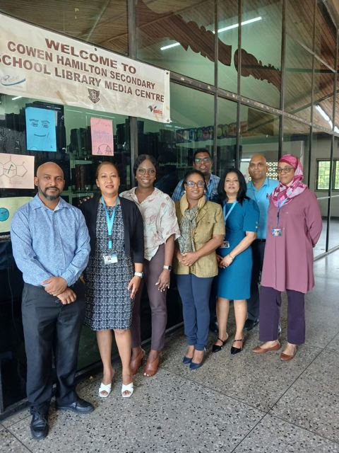

Part A of F
A - Introduction
My purpose, my story and my initial teaching philosophy.
Documents in this part
- My purpose statementWhy this portfolio was created and what it sets out to show about my growth as an Information Technology teacher.
- My initial teaching philosophyMy teaching philosophy, described through the metaphor of a scale.
- Letter to myselfA letter to myself on why I became a teacher and what I hope to gain from the programme.
The cohort
